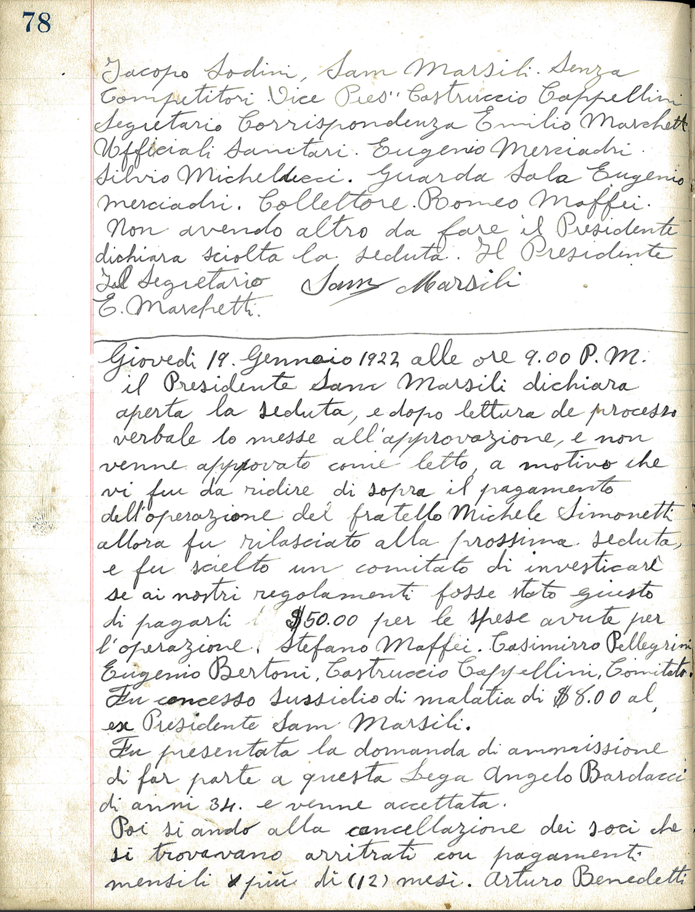
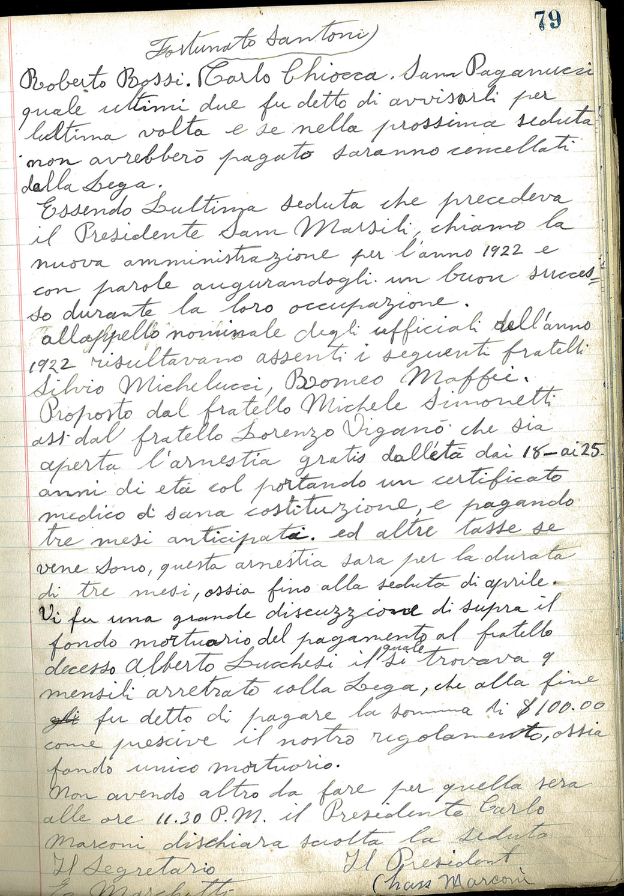
Giovedi 19 Gennaio 1922 alle ore 9.00 P.M.
il Presidente Sam Marsili dichiara
aperta la seduta, e dopo lettura de processo
verbale lo messe
all’approvazione, e non
venne approvato come letto, a motivo che
vi fu
da ridire di sopra il pagamento
dell’operazione del fratello Michele Simonetti
allora fu rilasciato alla
prossima seduta,
e fu scielto un comitato di investicare
se ai nostri regolamenti
fosse stato giusto
di pagarli $50.00 per le spese avute per
l’operazione.
Stefano Maffei,
Casimirro Pellegrini,
Eugenio Bertoni,
castruccio Cappellini
, Comitato.
Fu concesso sussidio di malatia di $8.00
al
ex Presidente Sam
Marsili.
Fu presentata la domanda di ammissione
di far parte a questa
Lega
Angelo Barducci
di anni
34
e venne accettata.
Poi si ando alla cancellazione dei soci che
si trovavano arritrati
con pagamenti
mensili x piu’ di (12) mesi.
Arturo Benedetti
Roberto Bossi,
Fortunato Santoni,
Carlo Chiocca,
Sam Paganucci
quale ultimi due fu detto di avvisarli per
l’ultima volta e se nella
prossima seduta
non avrebbero pagato saranno cancellati
dalla
Lega.
Essendo Lultima seduta che precedeva
il Presidente Sam Marslii, chiamo la
nuova amministrazione per l’anno 1922 e
con parole augurandogli un buon
succes-
so durante la loro occupazione.
allappello nominale degli ufficiali dell’anno
1922 risultavano
assenti i seguenti fratelli
Silvio Michellucci,
Romo Maffei,
Proposto dal fratello Michele Simonetti
ass dal fratello Lorenzo Vigano’ che
sia
aperta l’arnestia gratis dall’eta dai 18-ai 25
anni di eta col
portando un certificato
medico di sana costituzione, e pagando
tre
mesi anticipati. ed altre tasse si
vene sono, questa arnestia sara per la
durata
di tre mesi, ossia fino alla seduta di aprile.
Vi fu una grande discuzzione di supra il
fondo mortuario del pagamento al fratello
decesso Alberto Lucchesi il quale si
trovava 9
mensili arretrato colla Lega, che alla fine
gli fu detto di pagare la somma di $100.00
come prescive il nostro
regolamento, ossia
fondo unico mortuario.
Non avendo altro da fare per quella sera
alle ore 11.30 P.M.
il Presidente Carlo
Marconi
dischiara sciolta la seduta.
Il Segretario Il Presidente
E. Marchetti Chass Marconi
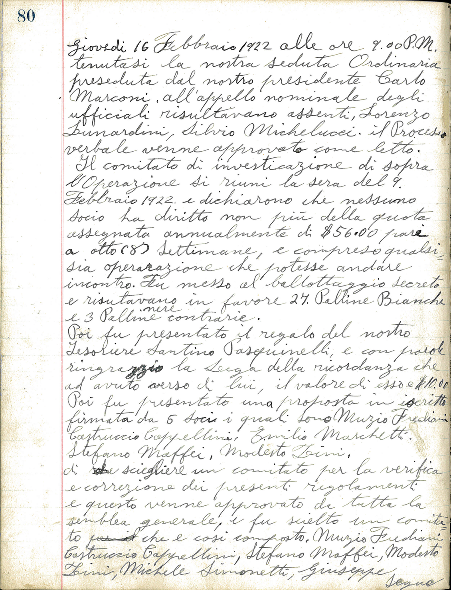
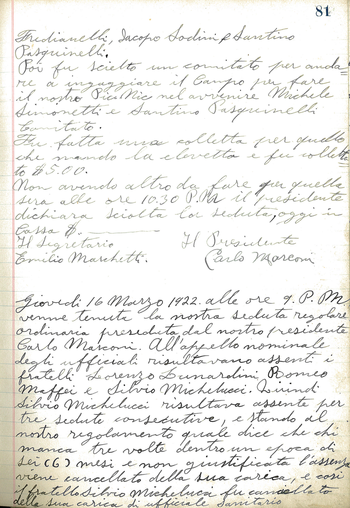
Giovedi 16 Febbraio 1922 alle ore 9.00 P.M.
tenutasi la nostra
seduta Ordinaria
preseduta dal nostro presidente
Carlo
Marconi.
all’appello nominale degli
ufficiali risultavano assenti,
Lorenzo
Lunardini,
Silvio Michellucci.
il Processo
verbale venne approvato come letto.
Il comitato di
investigazione di sopra
l’Operazione si riuni la sera del 9
Febbraio
1922 e dichiarono che nessuno
socio ha dirito non piu’ della quota
assegnata annualmente di $56.00 pari
a otto (8) Settimane, e compreso
qualsi-
sia operazione che potesse andare
incontro. Fu messo al
ballottaggio secreto
e risutavano in favore 27 Palline Bianche
e 3
Palline nere contrarie.
Poi fu presentato il regalo del nostro
Tesoriere Santino
Pasquinelli, e con parole
ringrazzio la Lega della
ricordanza che
ad avuto verso di lui, il valore di esso e $10.00
Poi fu presentato una proposta in iscritto
firmata da 5 Soci i quali sono,
Castruccio Cappellini,
Emilio Marchetti,
Stefano Maffei, Modesto Zini,
di she
sciegliere un comitato per la verifica
e correzione di presenti
regolamenti
e questo vene approvato da tutta la
semblea
generale,
e fu scielto un comita-
to per il che e
cosi’ composto,
Muzio Frediani,
Castruccio Cappellini,
Stefano Maffei,
Modesto
Zini,
Michele Simonetti,
Giuseppe
(Segue)
Fredianelli,
Jacopo Sodini,
e Santino
Pasquinelli.
Poi fu scielto un comitato per anda-
re a ingaggiare il Campo per
fare
il nostro PicNic nel avvenire
Michele
Simonetti
e Santino Pasquinelli
Comitato.
Fu fatta una colletta per quello
che mando la elevetta e fu
colletta-
to $5.00.
Non avendo altro da fare per quella
sera alle ore 10.30 P.M. il presidente
dichiara sciolta la seduta, oggi
in
Cassa $______
Il Segretario Il Presidente
Emilio Marchetti
Carlo Marconi
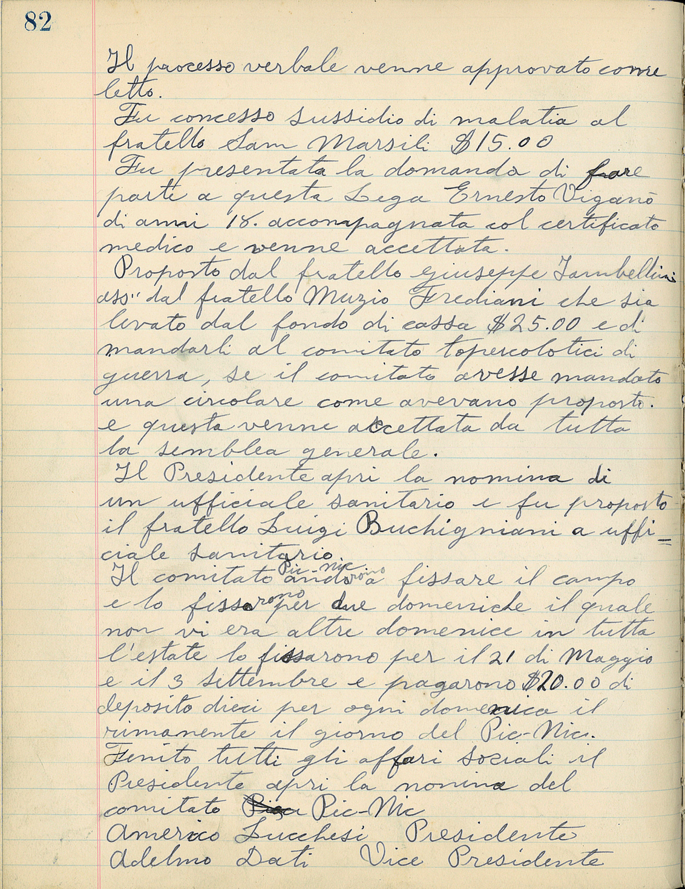
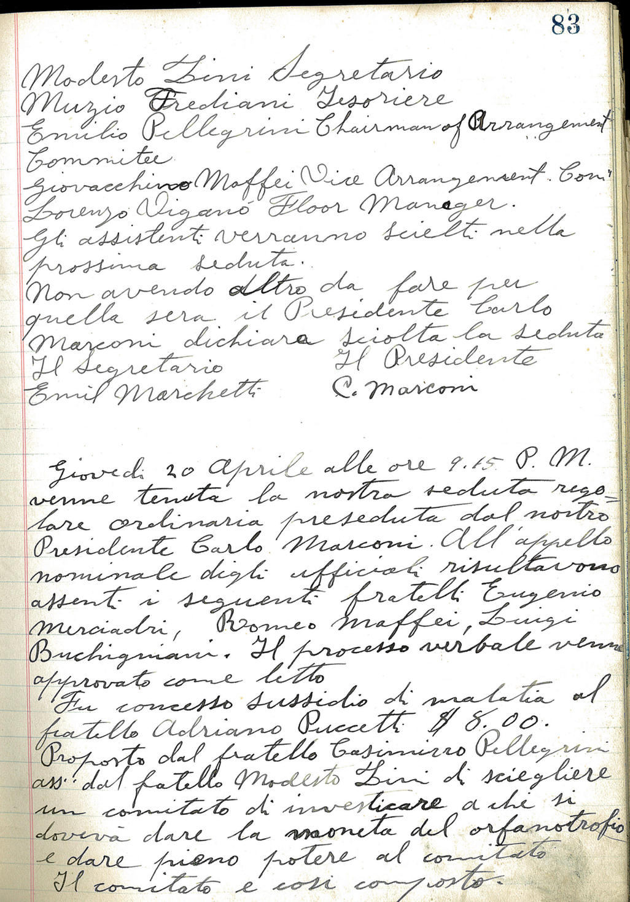
Giovedi 16 Marzo 1922 alle ore 9 P.M.
venne tenuta la nostra
seduta regolare
ordinaria preseduta del nostro
presidente
Carlo Marconi.
All’appello nominale
degli ufficiali risultavano assenti i
fratelli
Lorenzo Lunardini
Romeo
Maffei
e Silvio
Michelucci.
Quindi
Silvio Michelucci risultava assente
per
tre sedute consecutive, e stando al
nostro regolamento quale dice
che chi
manca tre volte dentro un epoca di
sei (6) mesi e non
giustificata l’assenza
viene cancellato della sua carica, e cosi
il fratello Silvio Michelucci fu
cancellato
della sua carica di ufficial Sanitario
Il Processo verbale venne approvato come
letto.
Fu concesso sussidio di malatia al
fratello Sam Marsili
$15.00
Fu presentata la domanda di fare
parte a questa Lega
Ernesto Vigano’ di anni 18
accompagnata col certificato
medico e venne accettata.
Proposto dal fratello giuseppe Tambellini
ass.
dal fratello Muzio
Frediani che sia
levato dal fondo di cassa $25.00 ed
mandarli al comitato topercolotici di
guerra, se il comitato avesse
mandato
una circolare come avevano proposto.
e questa venne accettata
da tutta
la semblea generale.
Il Presidente apri la nomina di
un ufficiale
Sanitario e fu proposto
il fratello Luigi
Buchigniani a uffi-
ciale Sanitario.
Il comitato Pic-Nic
andarono a fissare il campo
e lo fissarono per due domeniche il quale
non vi era altre domenice in tutta
l’estate lo fissarono per il 21 di
Maggio
e il 3 Settembre e pagarono $20.00 di
deposito dieci per ogni
domenica il
rimanente il giorno del Pic-Nic.
Finito tutti gli affare sociale il
Presidente apri la nomina
del
comitato Pic-Nic
Americo Lucchesi
Presidente
Adelmo Dati
Vice Presidente
Modesto Zini
Segretario
Muzio Frediani
Tesoriere
Emilio Pellegrini
Chairman of
Arrangement
Committee
Giovacchino Maffei
Vice Arrangement
Com.
Lorenzo Vigano’
Floor Manager
gli assistenti verranno scielti nella
prossima seduta.
Non avendo altro da fare per
quella sera il
Presidente Carlo
Marconi dichiara sciolta la seduta
Il
Segretario Il Presidente
Emil Marchetti
C. Marconi
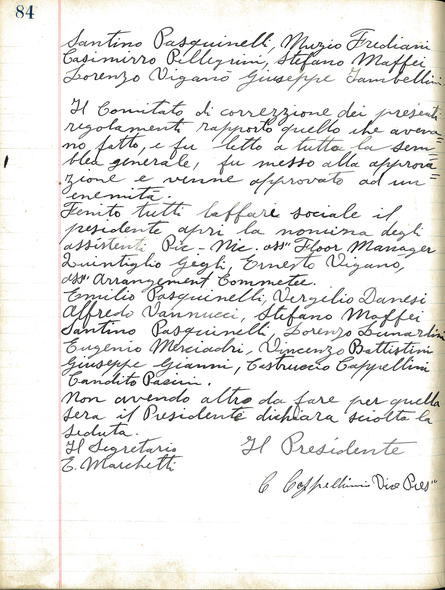
Giovedi 20 Aprile alle ore 9.15 P.M.
venne tenuta la nostra
seduta rego-
lare ordinaria preseduta dal
nostro
Presidente Carlo Marconi.
All’appello
nominale degli ufficiali risultavano
assenti i
seguenti fratelli
Eugenio
Merciadri,
Romeo Maffei,
Luigi
Buchigniani.
Il processo verbale venne
approvato come letto
Fu concesso sussidio di malatia al
fratello Adriano Puccetti
$8.00.
Proposto dal fratello Casimirro Pellegrini
ass
dal fratello Modesto Zini
di sciegliere
un comitato di investigare a chi si
doveva’ dare la
moneta dal orfanotrofio
e dare pieno potere al comitato
Il comitato e cosi composto.
Santino Pasquinelli,
Muzio Frediani
Casimirro Pellegrini,
Stefano Maffei
Lorenzo Vigano’
Guiseppe Tambellini.
Il Comitato di correzzione dei presenti
regolamenti rapporto
quello che aveva-
no fatto, e fu letto a tutta la sem-
blea generale, fu
messo alla apporova-
zione e venne approvato ad un-
enemita’.
Finito tutti l’affare sociale il
presidente apri la nomina
degli
assistenti Pic-Nic.
ass Floor Manager
Quintiglio Gigli,
Ernesto Vigano’,
ass arrangement Committee.
Emilio
Pasquinelli,
Vergilio Danesi
Alfredo Vannucci,
Stefano Maffei
Santino
Pasquinelli,
Lorenzo Lunardini
Eugenio Merciadri,
Vincenzo
Battistini
Giuseppe Gianni,
Castruccio
Cappellini
Candito Pacini.
Non avendo altro da fare per quella
sera il
Presdiente dichiara sciolta la
seduta
Il Segretario Il Presidente
E. Marchetti
C Cappellini Vice Pres
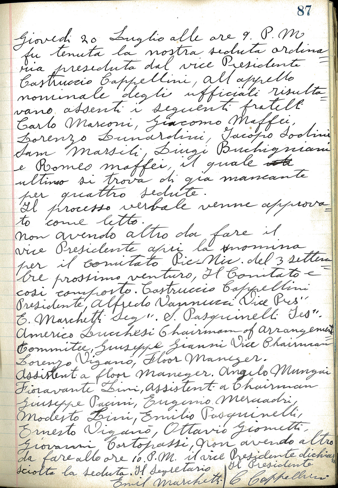
Giovedi 20 Luglio alle ore 9 P.M.
fu tenuta la nostra seduta
ordina-
ria preseduta dal vice Presidente
Castruccio Cappellini,
all appello
nominale degli ufficiali risulta-
vano assenti i
seguenti fratelli
Carlo Marconi,
Giacomo Maffei,
Lorenzo Lunardini,
Jacopo Sodini
Sam Marsili,
Luigi Buchignani
e Romeo Maffei,
il quali
ultimo si trova di gia mancante
per quattro
sedute.
Il processo verbale venne approva-
to come letto.
Non avendo altro da fare il
vice
Presidente apri la nomina
per il Comitato Pic-Nic del 3
Settem-
bre prossimo venturo, Il Comitato e
cosi composto.
Castruccio Cappellini
Presidente,
Alfredo Vannucci
Vice Pres”
E. Marchetti
Seg”.
S. Pasquinelli
Tes”.
Americo Lucchesi
Chairman of Arrangement
Committee,
Giuseppe Gianni
Vice Chairman
Lorenzo Vigano’, Floor Manager.
Assistenti a floor Manager.
Angelo Mungai
Fioravante Zini,
Assistent a Chairman
Giuseppe Pacini,
Eugenio Merciadri,
Modesto Zini,
Emilio
Pasquinelli,
Ernesto Vigano’,
Ottavio Giometti,
Giovanni
Cortopassi,
non avendo altro
da fare alle ore 10 P.M. il
vice Presidente dichiara
sciolta la seduta. Il Segretario Il Presidente
Emil Marchetti
C Cappellini
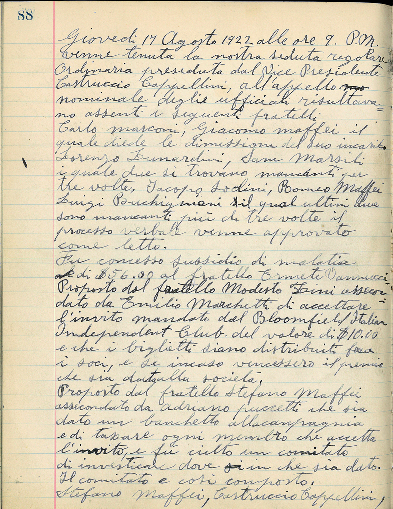
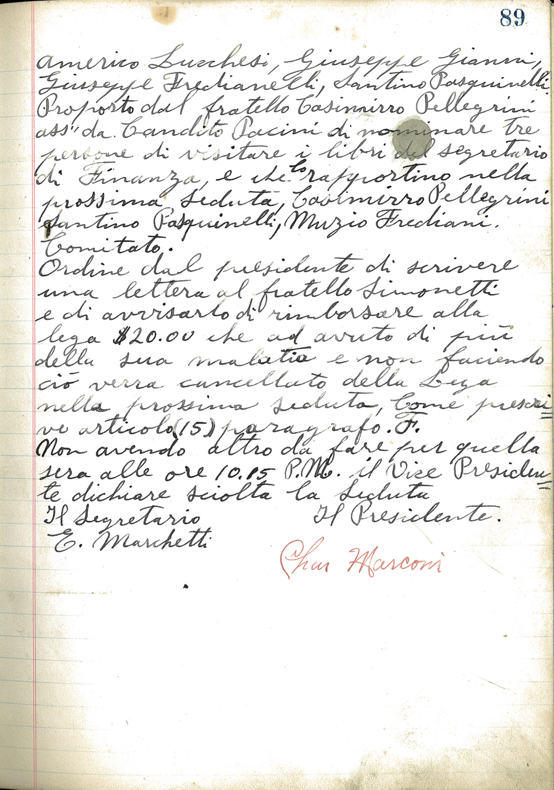
Giovedi 17 Agosto 1922 alle ore 9 P.M.
venne tenuta la nostra
seduta regolare
Ordinaria preseduta dal Vice
Presidente
Castruccio Cappellini,
all’appello mo
nominale degli ufficiali
risultava-
no assenti i seguenti fratelli
Carlo Marconi,
Giacomo Maffei
il
quale diede le dimissione del suo incarito,
Lorenzo
Lunardini,
Sam Marsili
il quale due si trovano mancanti per
tre volte,
Jacopo Sodini,
Romeo
Maffei
Luigi
Buchigniani
il quale ultimi due
sono mancanti piu’ di tre volte
il
processo verbale venne approvato
come letto.
Fu concesso sussidio malatia
di $56.00
al fratello Ermete
Vannucci
Proposto dal fratello Modesto Zini assecon-
dato da
Emilio Marchetti di
accettare
l’invito mandato dal Bloomfield Italian
Independent Club
del valore di $10.00
e che i biglietti siano distribuiti fra
i soci,
e se incaso vincessero il premio
che sia dato alla societa’.
Proposto dal fratello Stefano Maffei
assecondato
dal Adriano puccetti
che sia
dato un banchetto allacanpagnia
e di tassare ogni membro che
accetta
l’invito, e fu cielto un comitato
di investicare dove
si in che sia dato.
Il comitato e cosi composto.
Stefano Maffei,
Castruccio Cappellini,
Amercio Lucchesi,
Giuseppe Gianni,
Giuseppe Fredianelli,
Santino Pasquinelli.
Proposto dal fratello Casimirro Pellegrini
ass da
Candito Pacini di
nominare tre
persone di visitare i libri del segretario
di Finanza, e
che lo rapportino nella
prossima seduta,
Casimirro Pellegrini
Santino Pasquinelli,
Muzio Frediani,
Comitato.
Ordine dal presidente di scrivere
una
lettera al fratello Simonetti
e di
avvisarlo di rimborsare alla
lega $20.00 che ad avuto di piu’ della sua
malatia e non faciendo
cio’ verra cancellato della Lega
nella prossima
seduta, Come prescri-
ve articolo (15) paragrafo.F.
Non avendo altro da fare per quella
sera alle ore 10.15 P.M. il Vice Presiden-
te dichiare sciolta la
Seduta
Il Segretario Il Presidente
E. Marchetti
Char Marconi
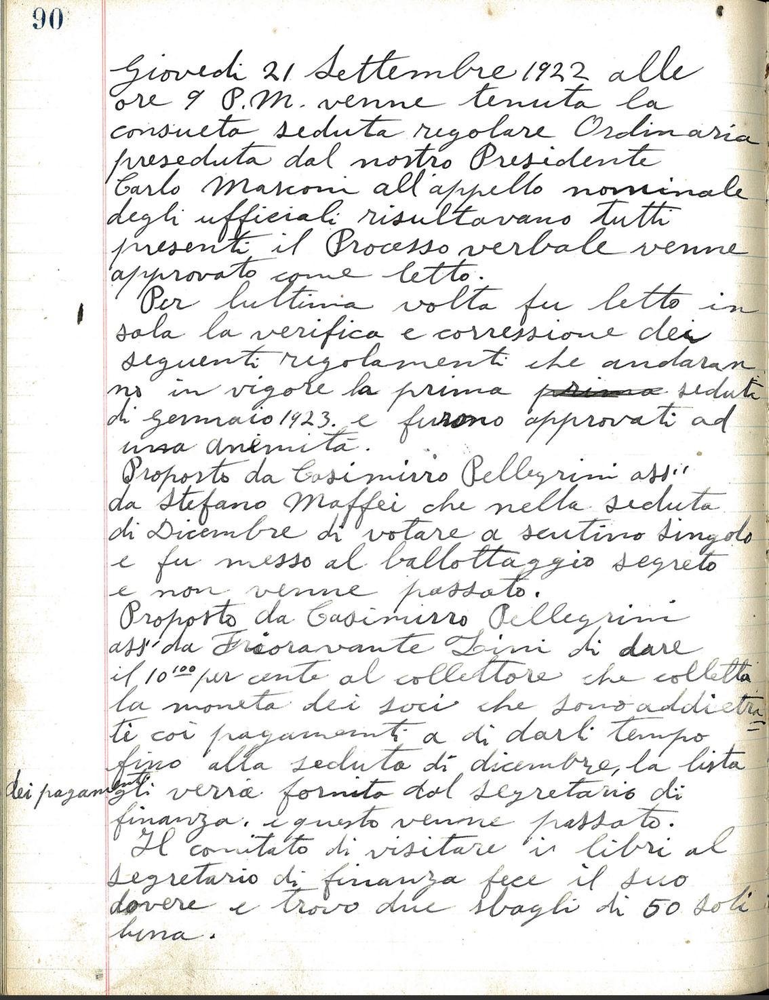
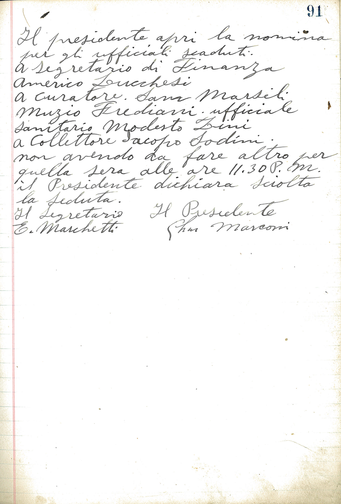
Giovedi 21 Settembre 1922 alle
ore 9 P.M. venne tenuta la
consueta seduta regolare Ordinaria
preseduta dal
nostro Presidente
Carlo Marconi all’appello nominale
degli
ufficiali risultavano tutti
presenti il Processo verbale venne
approvato
come letto.
Per lultima volta fu letto in
sola la verifica e corressione
dei
seguenti regolamenti che andaran-
no in vogore la prima prima seduta
di gennaio 1923 e furono approvati
ad
una anemita’.
Proposto da Casimirro Pellegrini ass” da Stefano Maffei che nella
seduta
di Diciembre di votare a sentivo singolo
e fu messo al ballottaggio segreto
e
non venne passato.
Proposto da Casimirro Pellegrini
ass”
da Fioravante Zini di
dare
il 10.100 per cente al collettore che
colletta
la moneta dei soci che sono addietra-
ti coi pagamenti a di
darli tempo
fino alla seduta di dicembre, la lista
dei pagamenti gli
verra’ fornita dal segretario di
finanza, e
questo venne passato.
Il comitato di visitare i libri al
segretario di finanza fece il suo
dovere e trovo due sbagli di 50 soli
luna.
Il presidente apri la nomina
per gli
ufficiali scaduti
a segretario di
Finanza
Americo
Lucchesi
A curatore
Sam Marsili
Muzio
Frediani,
ufficiale
sanitario
Modesto Zini
A Collettore
Jacopo Sodini.
Non avendo da fare altro per
quella sera alle ore 11.30 P.M.
il Presidente dichiara sciolta
la Seduta.
Il
Segretario Il Presidente
E. Marchetti
Char Marconi

Giovedi 19 Ottobre alle ore 9 P.M.
1922. Venne tenuta la nostra
seduta
regolare Ordinaria preseduta dal
nostro
Presidente Carlo Marconi
All’appello nominale degli ufficiali
risultava assente
il curatore Sam Marsili
il processo verbale venne approvato
come letto.
Fu cancellato dalla Lega
il socio
Lelio Tambellini
per avere rifutato
di pagare Le tasse mensili
Proposto da Casimirro Pellegrini ass” da
Giuseppe
Tambellini che $1.50 che
doveva pagare il fratello Giogio
Bassotti
sia pagato dalla Lega.
Proposto da Casimirro Pellegrini ass.
da Castruccio Cappellini di
mettere a
credito una ticcetta del ballo del valore
di $1.00
al fratello Silvio Michelucci
Proposto da Giuseppe Tambellini
ass da Angelo Tambellini di dare
il
ballo annuale nel mese di Gennaio 1923.
e che
sia ch cielto un comitato di
guardare quale
sala sia la meglio
per dare il nostro ballo e di rapportar-
lo
nella prossima seduta.
Jacopo Sodini,
Giuseppe Tambellini,
Santino Pasquinelli.
Comitato.
Non avendo altro da fare per quella
sera alle ore 10.15 P.M. il presidente
dichiara sciolta la seduta. Il
Presidente
Il Segretario E. Marchetti
M Frediani
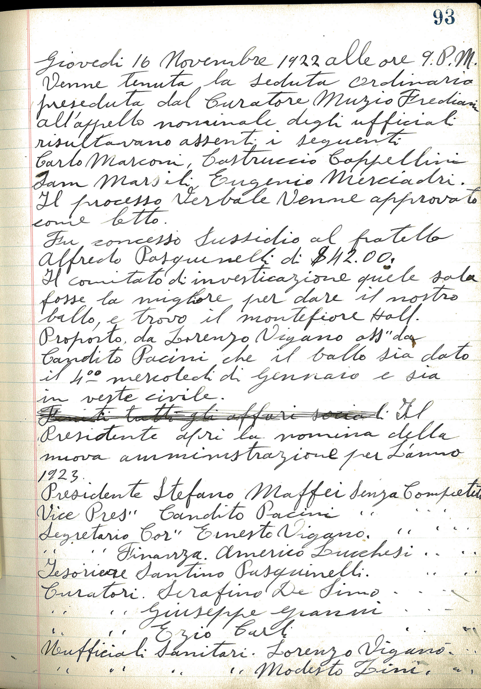
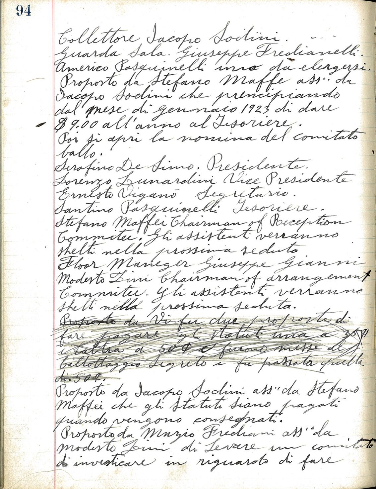
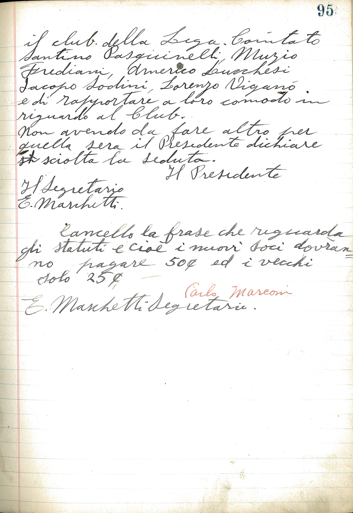
Giovedi 16 Novembre 1922 alle ore 9 P.M.
Venne tenuta la seduta
Ordinaria
preseduta dal Curatore Muzio
Frediani
all’appello nominale degli ufficiali
risultavano assenti i
seguenti
Carlo Marconi,
Castruccio Cappellini
Sam Marsili,
Eugenio Merciadri.
Il processo Verbale Venne approvato
come letto.
Fu concesso sussidio al fratello
Alfredo
Pasquinelli di $42.00.
Il comitato di investicazione quele sala
fosse
la migliore per dare il nostro
ballo, e trovo il montefiore Hall.
Proposto da Lorenzo Vigano’ ass. da
Candito Pacini che il
ballo sia dato
il 4 mercoledi di gennaio e sia
in veste civile.
Finiti tutti gli affari sociali
Il
Presidente apri la nomina della
nuova
amministrazione per L’anno
1923.
Presidente Stefano Maffei Senza Competitori
Vice Pres. Candito Pacini " "
Segretario Cor. Ernesto Vigano’ " "
" " Finanza. Americo Lucchesi " "
Tesoriere Santino Pasquinelli " "
Curatori Serafino De Simo " "
" "Giuseppe Gianni " "
" "Enzo
Carli " "
Nufficiali Sanitari. Lorenzo
Vigano’
" " " "Modesto Zini
Collettore Jacopo Sodini
Guarda Sala Giuseppe Fredianelli
Americo Pasquinelli uno da elegersi
Proposto da Stefano Maffei ass. da
Jacopo Sodini che
prencipiando
dal mese di gennaio 1923 di dare
$9.00 all’anno al
Tesoriere.
Poi si apri la nomina del comitato
ballo.
Serafino De Simo. Presidente
Lorenzo Lunardini. Vice Presidente
Ernesto Vigano’. Segretario
Santino Pasquinelli
Tesoriere.
Stefano Maffei
Chairman of Reception
Committee.
gli assistenti verranno
shelti nella prossima seduta.
Floor Maneger
Giuseppe Gianni
Modesto Zini
Chairman of Arrangement
Committee.
gli assistenti verranno
shelti nella prossima seduta.
Proposto da Vi fu due proposte di
fare pagare gli statuti
una a 35c
i altra a 50c e furono messe al
ballottaggio Segreto e fu
passata quella
di 50c.
Proposto da Jacopo Sodini ass. da Stefano
Maffei che gli statuti siano
pagati
quando vengono consegnati.
Proposto da Muzio Frediani ass. da
Modesto Zini di Levare un
comitato
di investicare in riguardo di fare
il club della Lega.
Comitato
Santino Pasquinelli,
Muzio
Frediani,
Americo Lucchesi
Jacopo Sodini,
Lorenzo Vigano’
e di rapportare a loro comodo in
riguardo al Club.
Non avendo da fare altro per
qualla sera il
Presidente dichiare
sciolta la seduda.
Il Segretario Il Presidente
E. Marchetti
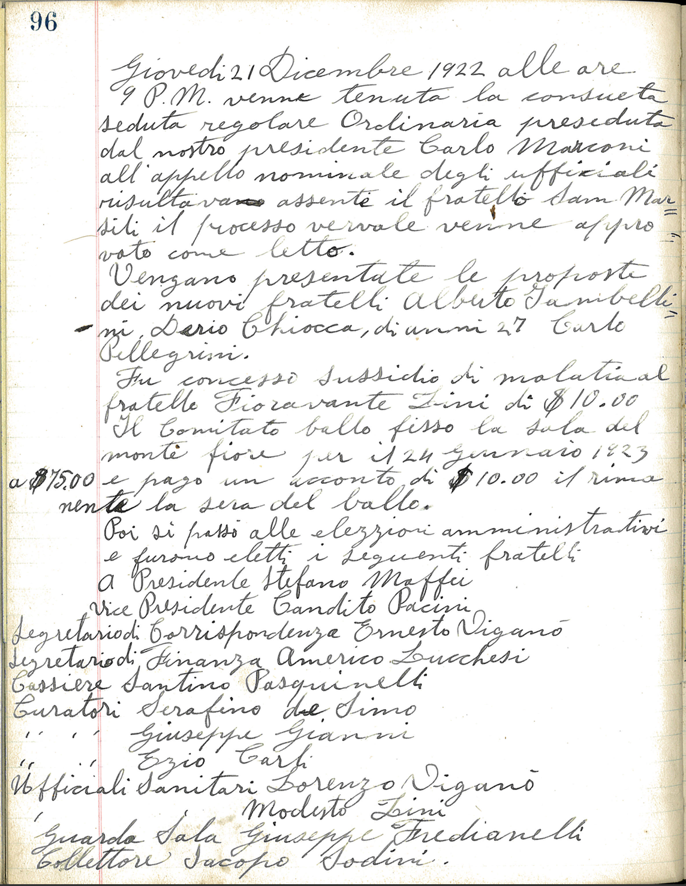
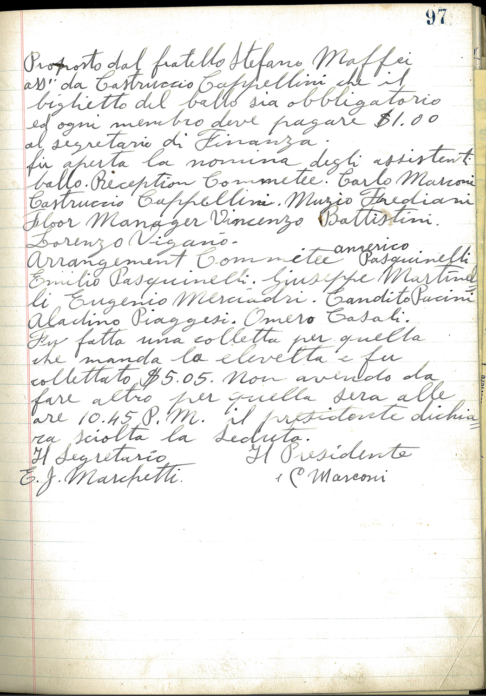
Giovedi 21 Dicembre 1922 alle ore
9 P.M. venne tenuta la
consueta
seduta regolare Ordinaria preseduta
dal nostro presidente Carlo Marconi
all’appello nominale degli ufficiali
risultavano assenti
il fratello Sam Mar-
sili
il process vervale venne appro-
vato come letto.
Vengano presentate le proposte
dei nuovi fratelli
Alberto Tambelli-
ni,
Derio Chiocca, di anni 27
Carlo
Pellegrini.
Fu concesso sussidio malatia al
fratello Fioravante Zini di
$10.00
Il Comitato ballo
fisso la sala del
monte fiore per il 24 gennaio 1923 a $75.00 e pago un
acconto di $10.00 il rima-
nente la sera del ballo.
Poi si passo alle elezzioni amministrativi
e furono eletti i
seguenti fratelli
A Presidente
Stefano Maffei
Vice Presidente
Candito Pacini
Segretario di
Corrispondenza
Ernesto Vigano’
Segretario di Finanza
Americo Lucchesi
Cassiere
Santino Pasquinelli
Curatori
Serafino de Simo
“ “ Giuseppe Gianni
“ “ Enzo Carli
Ufficiali Sanitari
Lorenzo Vigano’
Modesto Zini
Guarda Sala
Giuseppe Fredianelli
Collettore
Jacopo Sodini
Proposto dal fratello Stefano Maffei
ass. da
Castruccio
Cappellini che il
biglietto del ballo sia obbligatorio
ed ogni membro deve pagare $1.00
al segretario di Finanza.
fu aperta la nomina degli assistenti
ballo.
Reception Commitee.
Carlo Marconi,
Castruccio
Cappellini,
Muzio Frediani
Floor Manager
Vincenzo
Battistini
Lorenzo Vigano’.
Arrangement Commitee
Americo
Pasquinelli
Emilio
Pasquinelli,
Giuseppe Martinel-
li
Eugenio Merciadri,
Candito Pacini
Aladino Piaggesi,
Omero Casali.
Fu fatta una colletta per quella
che manda la elevetta e fu
collettato $5.05. Non avendo da
fare altro per quella sera alle
ore 10.45 P.M. il presidente dichia-
ra sciolta
la seduta.
Il Segretario Il Presidente
E. J. Marchetti
C. Marconi